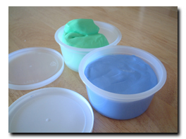

| ..*..*.. 2004年4月7日(水) 晴れ ..*..*.. 昨年の９月くらいに左手の付け根の部分が痛くなりました。でも、どうして痛いのかはわからず、たぶん、すぐ直ると思っていました。ところが、12月になっても直らず、「もしかしたらパソコンのせいかも」と思いはじめました。 私は3年くらい前に、仕事で右側の首から肩にかけて痛くなり、セラピーに通ったことがあるんです。そのときは、モニターが高すぎたことと椅子や机の位置が悪かったらしいのですが、マウスも左手で使うように指導され、左手に変えていました。 左手は利き腕なので、あれこれ使うし、今回はパソコンのせいかどうかはわかりませんでした。が、会社の担当の人に相談するとやっぱりパソコンのせいだったそうです。 昨年の5月から9月にかけてとても忙しかったのですが、そのとき、ほとんど10時間くらいはパソコンに向かっていました。そのときの仕事の様子を見せると、「おそらく一日1000回くらいはマウスをクリックしてるね」と言われ、医者に見せるように言われました。 ところで、会社から病院へ行く、というのはたいへんです。パソコンのせいで痛くなる、ということは、パソコンを使うことが限界まできているはずなのに、何をするのも「Web上の○○から○○をダウンロードして、○○をインストールして、書類を完成させて○○に送るように」みたいに、思いっきりパソコンを使わされます。特に前回なんて、右手が上がらなくなったのに、それでも、そういう作業がすまないと、専門家に相談できないし、医者にも行けませんでした。 そういうことを乗り越えて、今回も無事、先生からセラピストを紹介されて、セラピーに通いはじめると、どんどんよくなりました。 私の場合は、左手の人差し指の付け根の筋がかたくなっているそうで、まずはそれをほぐして痛みをとり、その後、その場所の周りの筋肉を強くして、再び起こらないようにする、というものでした。 最初の1か月は、1)セラピストによるマッサージ10分、2)超音波によるマッサージ5分、3)ロウの解けたものに手を突っ込み乾かして10分(つまりあたためる)、ということを続け、必要なら痛み止めも飲むのですが、私は前回、その痛み止めのせいで眠くなり、まったく仕事にならなかったので、痛み止めはやめました。 あとは、1時間仕事をしたら、5分間、指のストレッチをするよう言われました。  そうこうしているうちに、痛みが少なくなって来たので、今度は筋力トレーニングです。ストレッチの他に、右のようなゴムの器具を使って、指を鍛えます。また、ゴムバンドを問題の指でひっぱって筋力を高める、ということもしました。 あと、面白かったのは、大きなクッキーの缶の中にお米がたっぷり入っているのですが、その中に、お金やらおもちゃのクモやら、ボールペンのキャップやらが入っていて、それを決められた時間内で全部、左手で探す、というものでした。 セラピストによると、私は直りがすごく早かったそうです。おかげで、3か月くらいで無事に直りました。 |